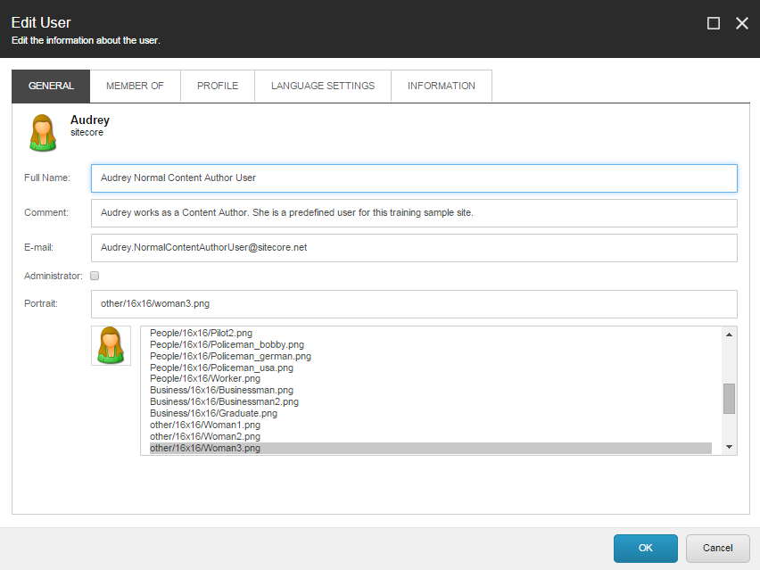
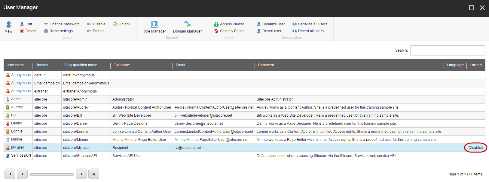

Edit and manage a user account
How to edit users' accounts, change their roles, disable, or delete them.
As a security administrator, you can edit and manage many aspects of a user account.
This topic outlines how to:
Edit a user account
Disable a user
Delete a user
In the User Manager, you can edit a user's account information or change the roles that they are members of.
To edit a user:
In the User Manager, click the relevant user and in the Users group, click Edit.
Edit the user information on the following tabs:
The General tab – change the user's name and email address. You can also edit the image that is used as a portrait of the user in XM Cloud.
The Member Of tab – edit the roles that the user is a member of and associate one or more domains with the user.
Note
If you want to allow users of a locally managed domain to see and manage more domains than the one they belong to, you can click Domains and associate the relevant domains to the user. Users of global domains can, by default, work with all domains, but if you associate one or more domains to this type of user, they are restricted to only seeing the domains you associated.
The Profile tab – in the User Profile section, specify the start URL that should open for the user when the user logs in. No matter what you choose, the user has access to all the same things.
Start URL
Description
Default
The Tools tab of the Dashboard opens from where the user can open and view everything that the user has to access.
Content Editor
The Content Editor opens.
Experience Editor
The Experience Editor opens.
Preview
XM Cloud opens in preview mode.
Desktop
XM Cloud Desktop opens.
URL
XM Cloud opens the custom URL that you enter in the field. For example, if you want XM Cloud to open the Media Library on login.
In the Additional Properties section, edit information about the user profile that was selected for the user when their account was created.
The Language Settings tab – in the Sitecore Client section, specify the language and the regional code that the client should use when the user logs in. In the Content section, specify the default language of the website content for the user.
The Information tab – view the history of the user. This includes when the user was created, the last login time, and so on.

When you have finished editing the user, click OK.
A security administrator will occasionally have to prevent users from accessing the system for a certain period, for example, if a user is on extended leave. In this situation, you can disable the user.
Note
When you disable a user in XM Cloud, the account will remain disabled even if they delete and recreate their account on the Sitecore Cloud Portal. To restore their access, you must enable their account.
To disable a user:
Open the User Manager and click the relevant user. In the Locked column, Disabled indicates if a user has been disabled.
 To disable a user, in the Users group, click Disable. To enable the user again, click Enable.
To delete a user, change their XM Cloud app access to No access or remove them from the organization. From XM Cloud, you must not delete a user that has Admin access in the Sitecore Cloud Portal. This is because the user account will not be permanently deleted and will be recreated with Administrator rights, the next time they log in.